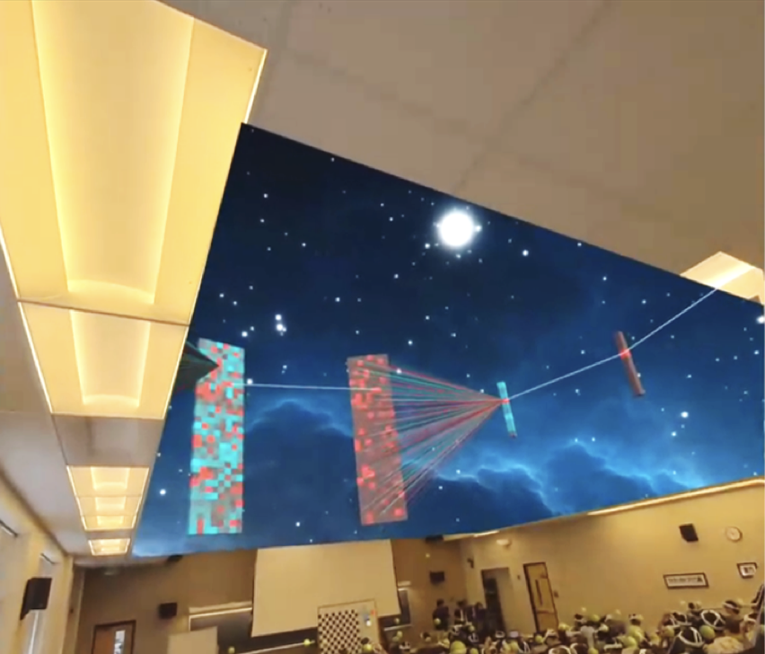

Ahaan (Maz) Agrawal
I am a Fulbright Research Scholar at Fraunhofer IGD, hosted by Fabian Rücker, where I am researching text-to-3D scene generation for real-time rendering in VR. I received my B.S. in Computer Science from Purdue University, where I was fortunate to work with Professor Voicu Popescu on developing extended reality systems.
I’m interested in creating high-quality, dynamic 3D scenes for immersive environments using neural rendering, generative models, and 3D reconstruction.
In my free time, I try to get outside as much as possible. My favorite activities include hiking, rock climbing, scuba diving, surfing, skiing, and many more!